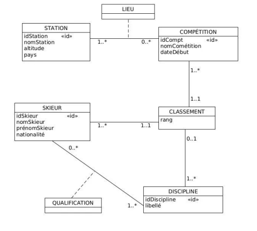

Présentation de la Compétence
📋 Définition
Concevoir, gérer, administrer et exploiter les données de l'entreprise et mettre à disposition toutes les informations pour un bon pilotage de l'entreprise.
🎯 Composantes Essentielles
- en respectant les réglementations sur le respect de la vie privée et la protection des données personnelles
- en respectant des enjeux économiques, sociétaux et écologiques de l'utilisation et du stockage des données
- en s'appuyant sur des bases mathématiques solides (par exemple logique et statistiques)
- en considérant les modèles de données utilisés dans les développements technologiques
- en assurant la cohérence et la qualité
📚 Apprentissages Critiques
- AC1 Mettre à jour et interroger une base de données relationnelle (en requêtes directes ou à travers une application)
- AC2 Visualiser des données
- AC3 Concevoir une base de données relationnelle à partir d'un cahier des charges
1. Mise à jour pertinente d'une base de données relationnelle
💬 SAE 2.03 - Gestion données utilisateurs
- Persistance fichiers : Sauvegarde utilisateurs, messages, conversations
- Synchronisation : Données partagées entre clients multiples
- Mise à jour temps réel : Ajout messages, connexion utilisateurs
- Intégrité : Validation authentification, cohérence sessions
🗄️ SAE 2.04 - Scripts SQL avancés
- INSERT complet : INSERT 50+ données cohérentes par table
- UPDATE complexe : Modification en masse avec sous-requêtes
- DELETE sécurisé : Suppression cascade avec contraintes FK
- Gestion contraintes : CHECK dates, UNIQUE compositions
📸 Screenshot : 
💬 SAE 2.03 - Gestion données temps réel optimisée
- Cache mémoire : Utilisateurs connectés en HashMap O(1)
- Synchronisation : Polling 1s pour rafraîchissement sans surcharge
2. Interrogations efficaces et affichage des résultats
💬 SAE 2.03 - Requêtes et affichage temps réel
- Recherche utilisateurs : Filtrage et affichage liste connectés
- Historique messages : Récupération conversations par utilisateur
- Synchronisation : Polling données pour rafraîchissement auto
- Performance : Accès optimisé fichiers, cache en mémoire
📊 SAE 2.04 - Requêtes SQL complexes ski alpin
- Jointures multiples : station ⋈ competition ⋈ skieur ⋈ classement
- Fonctions temporelles : EXTRACT(year FROM dateDebut) = 2025
- Agrégations : COUNT skieurs, AVG temps, MAX altitude stations
- Sous-requêtes : Comparaisons performances, classements relatifs
- Résultats formatés : Classements ordonnés, données métier exploitables
3. Conception BD selon cahier des charges avec validation
🎿 SAE 2.04 - Base de données Ski Alpin
- Analyse métier : Domaine ski alpin → Entités (Station, Skieur, Compétition)
- MCD détaillé : 8 entités, 12 associations, cardinalités justifiées
- Règles métier : "Un skieur participe à une compétition dans une station"
- MLD optimisé : 12 tables, clés étrangères, contraintes d'intégrité
- MPD PostgreSQL : Types appropriés, index composite, triggers
- Validation : 15 requêtes test sur données réelles
📸 Screenshot : 
📊 SAE 2.01/2.02/2.05 - Structure données projet
- Modélisation MPM : Tâches, Dépendances, Ressources
- Fichiers .data : Format structuré pour persistence
- Import/Export : Lecture/écriture avec validation format
- Contraintes métier : Durées positives, dépendances cycliques
4. Contrôles qualité et validation données
✅ SAE 2.04 - Contrôles intégrité avancés
- Contraintes CHECK : Dates cohérentes (dateDebut < dateFin)
- Clés étrangères : Référentiel stations, skieurs valides
- Documentation schéma : Dictionnaire données complet
🔍 SAE 2.03 - Validation données temps réel
- Validation utilisateur : Regex email, longueur password
5. Modèles de données et normalisation
🔄 SAE 2.04 - Transformation modèles
- MCD → MLD : Entités → Tables, Associations → Clés étrangères
- Normalisation 3FN : Élimination redondances, dépendances transitives
- Relations 1:1, 1:N, N:N : Implémentation appropriée
- Optimisation : Dénormalisation contrôlée pour performance
6. Adaptation et autocritique
🎯 Points forts
- Bonne compréhension des concepts relationnels
- Maîtrise des requêtes SQL de base
- Capacité de modélisation métier
📈 Axes d'amélioration
- Optimisation avancée des performances
- Gestion des grandes volumétries
- Sécurité et protection des données